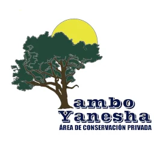

|  |
Contrato de Membresía |
|
| PARA A.C.P. TAMBO YANESHA |
| Fecha de Inicio: |
Chontabamba, Oxapampa, departamento de pasco, perú |
|
| información personal |
| Nombres y Apellidos: |
| Nacionalidad: |
| Pasaporte/CE/DNI: |
Fecha Nacimiento: |
Edad: |
| Estado Civil: |
|
Nº de Hijos: |
| País de Residencia: |
Estado: |
Distrito: |
| Dirección: |
| Empresa donde trabaja: |
|
Cargo: |
| Telefono Celular: |
Telefono Casa: |
Telefono Oficina: |
| Email: |
|
| REGLAMENTO GENERAL DE SOCIOS |
| I. DEL AREA DE CONSERVACIÓN PRIVADA TAMBO YAHESHA EN GENERAL: |
Tambo Yanesha, en adelante A.C.P., es una asociación que se regirá bajo los siguientes términos:
Primero:EL A.C.P. Tambo Yanesha tiene como finalidad preservar, promover, fomentar, orientar, difundir y enseñar sus distintos programas se incluyen dentro de nuestro albergue, como son: la Conservación de nuestra fauna y flora, la permacultura, la alimentación natural a base de vegetales, la salud física y mental a través del Reiki y el Yoga, la recuperación física y/o desintoxicación; entre sus principales objetivos contribuyendo así al desarrollo fisico, espiritual y moral de sus socios.
Segundo: El presente documento desarrolla los contenidos expresados en los lineamientos de EL A.C.P. y en ningún caso podrá ir contra la filosofía y políticas del mismo.
Tercero: EL A.C.P. se resera el derecho de modificar, adicionar y/o complementar estos términos. Todas las modificaciones adicionales, y demás, entraran en vigencia al día siguiente de su publicación.
|
| II. DEL INGRESO DE SOCIOS: |
|
Cuarto: Podrán ingresar a EL A.C.P. todas aquellas personas mayores a 18 años, o menores de edad con el consentimiento expreso del padre y/o madre o apoderado, que así lo soliciten y que deseen llevar un programa en EL A.C.P.
Quinto: La solicitud de ingreso deberá ser completada en su totalidad con los datos registrados, de manera legible y fidedignos, para lo cual se le solicitará, en físico su documento de identidad, PASAPORTE, C.E. o DNI, según sea el caso y en la que deberá indicar el país de donde se está registrando.
De comprobarse que algún dato de la información proporcionado es falso, la solicitud puede ser rechazada.
Sexto: Una vez admitido el nuevo socio(a), se compromete a cumplir con las condiciones indicadas en el presente documento. A cambio EL A.C.P. le hará entrega de su carnet según membresía, mismo que incluye los descuentos y derechos que este brinda a partir de la fecha que le sea indicada oficialmente y según tiempos estipulados.
|
| III. DE LOS BENEFICIOS Y OBLIGACIONES DE LOS SOCIOS: |
|
Séptimo: Los socios tendrán los siguientes beneficios en EL A.C.P.
1. Participar de los diferentes programas según membresía.
2. Participar de las actividades y eventos que EL A.C.P. pueda realizar en su sede central y/o en otras locaciones serán comunicadas por nuestro responsable de RRPP.
3. Consultar con el instructor según programa le toco según membresía y/o algún otro desee incorporarse.
4. Participar de futuros eventos se llevarán en la sede central y otras sedes les será comunicado en su oportunidad.
5. Cancelar las cuotas de su membresía como máximo al tercer día útil del mes que inicia el trimestre, semestre o año.
6. Tratándose de parejas (es decir, esposo y esposa) significará que la cuota de inscripción se mantendrá para ambos para el caso de la membresía, pero, el esposo o esposa tendrá un descuento del 50% para el caso de las cuotas trimestrales, semestrales o anuales.
7. Disfrutar de las campañas y/o nuevos programas que pueda ofrecer EL A.C.P. y se les comunicara oportunamente a su correo electrónico y serán publicadas en la webpage de EL A.C.P.
8. Al finalizar el primer año de operaciones EL A.C.P. tendrá convenios con ciertas entidades afines a nuestra misión, con las cuales podrán aprovechar descuentos de sus productos/servicios, la única condición para aprovecharlos será estar al día en sus cuotas.
Octavo: Los socios tendrán las siguientes obligaciones:
1. Cumplir los preceptos que marcan las normas de educación y buena conducta.
2. Cooperar en el desarrollo de labores de EL A.C.P. y en la buena ejecución de las actividades que se determinen.
3. Comunicar con anticipación (al menos 30 días) su visita con un correo simple
4. Abonar, en las fechas correspondientes, las cuotas de socios que se determinen en el tiempo y forma establecidos oportunamente (trimestral, semestral o anual).
5. Entender que no habrá pagos mensuales, bajo ningún concepto, por cuotas de socios.
6. En caso de no abonar su cuota según sea el caso: trimestral, semestral o anual; dejara de recibir comunicaciones relativas a algún nuevo programa/invitación, ni podrá usar el carnet de socio con los establecimientos afiliados.
7. Apoyar de manera voluntaria las acciones y/o eventos que EL A.C.P. pueda organizar y necesite la colaboración de sus socios.
8. Según el programa escogido, comunicar a su instructor respectivo de cualquier dolencia pueda tener y/o de presentarla a última hora.
9. Liberar a EL A.C.P. a sus instructores, directores, empleados (y demás involucrados en éste) de toda responsabilidad por alguna enfermedad, lesión o accidente que resulte de su participación en algunos de los programas brindamos.
10. Aceptar que debe tener un seguro de cualquier tipo por cuenta propia, en caso de alguna eventualidad (emergencia) el socio deberá pagar sus gastos médicos por alguna enfermedad, lesión o accidente pueda tener dentro de EL A.C.P.
11. Aceptar que EL A.C.P. pueda tomar fotografías o vídeos para publicidad, promoción u otros propósitos publicitarios vinculados a la misión de EL A.C.P.
12. Autorizar el uso de retratos, imágenes, copias y voz en cualquier medio de comunicación por actividades de EL A.C.P. obtenidas durante su participación como socio.
13. Aceptar que EL A.C.P. haga uso de los datos que brindara en su inscripción como socio, entendiendo que son confidenciales y exclusivos, de acuerdo a Ley N° 29733-Ley de Protección de Datos Personales, con la única finalidad de enviarle información relacionada a las actividades que realiza EL A.C.P.
|
| IV. DEL RETIRO DEL SOCIO: |
|
Noveno: Los socios eventualmente podrán solicitar en cualquier momento, de manera voluntaria, su retiro de EL A.C.P. la misma debe ser realizada por escrito, para lo cual el socio deberá estar consciente que no tiene deudas pendientes, en general, con EL A.C.P.
Décimo: El socio que presente su carta dejara de utilizar el carnet que le brinda adicionalmente otros beneficios/descuentos.
Décimo primero: Algún socio también podrá ser dado de baja de EL A.C.P. por una de las siguientes causas:
1.Cuando exista incumplimiento grave de las normas de educación, moral y buena conducta y del presente documento.
2.Cuando el socio impida deliberadamente, ya sea de manera abierta o no, el cumplimiento de la misión y/o fines de EL A.C.P.
3. Caso la conducta vaya contra los principios o dañen, de alguna manera, la buena imagen de EL A.C.P.
Décimo segundo: En cualquier caso, cualquier expediente de baja, indicado en punto anterior, deberá ser tratado por la Gerencia de EL A.C.P. y los miembros de su Junta directiva, garantizando siempre la audiencia al interesado.
|
| V. DE LOS INVOLUCRADOS |
| Del Socio: |
Del A.C.P.: |
|
_________________________________________ |
|
Firma / Sello: |
|
Tambo Yanesha |